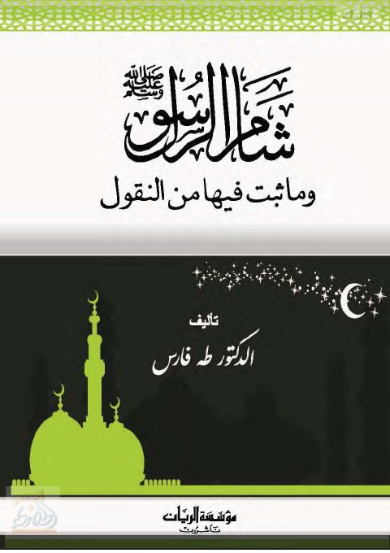

شام الرسول وما ثبت فيها من النقول
Authors: طه فارس
Publishers: مؤسسة الريان
Download Downloads need an internet connection.
- Published
- 1435 - 2014
- Edition
- 1
- Volumes
- 1
- Pages
- 89
- Type
- كتاب
- Category
- تاريخ
Description
**▫️ العنوان: شام الرسول وما ثبت فيها من النقول** ▪️ المؤلف: #طه_فارس ▫️ الناشر: #مؤسسة_الريان ▪️ تاريخ النشر: 1435 - 2014 ▫️ الطبعة: 1 ▪️ عدد الأجزاء: 1 ▫️ الصفحات: 89 ▪️ نوع الوعاء: #كتاب ▫️ التصنيف الرئيسي: #تاريخ ۪